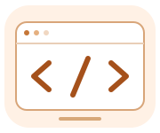
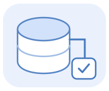

ТВОЁ УЧЕБНОЕ ПРОСТРАНСТВО
Что изучаем сегодня?
Выбери дисциплину или найди нужную тему. Все материалы доступны без входа.
Дисциплины
Лекции и практика по каждому предмету
Java
От первой программы до классов,
объектов и собственной системы.

Базы данных и SQL
Таблицы, связи и запросы.
Сразу с настоящей песочницей.

Информационные технологии
Как работают данные и инструменты.
От модели до готового отчёта.
02 / ПОПРОБУЙ САМ
От теории к своей программе.
Выбери практическую, повтори общий пример
и переходи к своему варианту.
ОП.08 / БАЗЫ ДАННЫХ И SQL
Базы данных и SQL
Разбери таблицы и связи, научись задавать вопросы данным и проверь запрос в песочнице.
Лекции
05 / ОТ ОСНОВ К ПРАКТИКЕПРОГРАММИРОВАНИЕ / JAVA
Программирование на Java
Лекции, примеры кода и пошаговые модели. Собери знания в работающую программу.
Лекции
JAVA / ПРАКТИКА
Практика по Java
Лабораторные и практические работы с вариантами, примерами и ссылками на нужную теорию.
02 / ВСЯ ПРАКТИКА
Практические работы
Работы собраны по дисциплинам. Выбирай задание, открывай теорию и проверяй результат.
Java
Открыть лекции →Информационные технологии
Открыть лекции →Открываем материал…